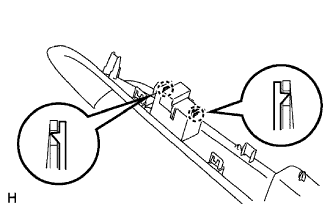
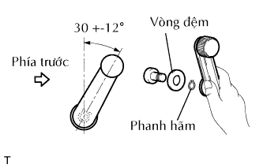

NẸP DỌC CỬA TRƯỚC > LẮP |
| 1. LẮP GIOĂNG NGOÀI KÍNH CỬA TRƯỚC TRÁI |
Cài khớp các vấu để lắp gioăng.
| 2. LẮP CỤM GƯƠNG CHIẾU HẬU NGOÀI TRÁI |
 |
Install the mirror so that the claw attaches, and install the 3 nuts.
w/ Power Mirror Control System:
Connect the connector labeled A.
| 3. LẮP ỐP TRANG TRÍ CỬA TRƯỚC BÊN TRÁI |
 |
Cài khớp 8 vấu để lắp gioăng cửa bên trong.
Lắp tấm ốp.
Cài khớp 9 kẹp để lắp ốp cửa.
Lắp kẹp.
| 4. LẮP TẤM ĐỠ TRÊN TỰA TAY TRƯỚC TRÁI |
|  |
cho Phía hành khách trước:
Cài khớp 2 vấu để lắp công tắc kính cửa sổ vào tấm đế.
 |
cho Phía người lái:
Lắp công tắc chính nâng hạ kính vào tấm cửa.
Lắp 3 vít.
 |
Lắp giắc nối công tắc.
Cài khớp 2 kẹp và 8 vấu để lắp tấm đế cùng với công tắc chính cửa sổ điện.
Lắp tay kéo bằng một vít.
| 5. LẮP TẤM ỐP GIÁ BẮT KHUNG DƯỚI CỬA TRƯỚC TRÁI |
 |
Cài khớp 3 kẹp để lắp ốp trang trí.
| 6. LẮP CỤM TAY QUAY BỘ NÂNG HẠ KÍNH CỬA TRƯỚC (w/o cửa sổ điện) |
|  |
Lắp phanh hãm vào tay nắm bộ nâng hạ.
Với cửa sổ đã được đóng hoàn toàn, hãy lắp tay nắm nâng hạ cửa và vòng đệm vào trục nâng hạ, như được chỉ ra trong hình vẽ.
| 7. NỐI CÁP VÀO CỰC ÂM ẮC QUY |
| 8. TIẾN HÀNH THIẾT LẬP BAN ĐẦU |
Tiến hành thiết lập ban đầu (Xem trang Kích chuột vào đây).
| 9. KIỂM TRA ĐÈN CẢNH BÁO SRS |
Kiểm tra đèn báo SRS (Xem trang Kích chuột vào đây).